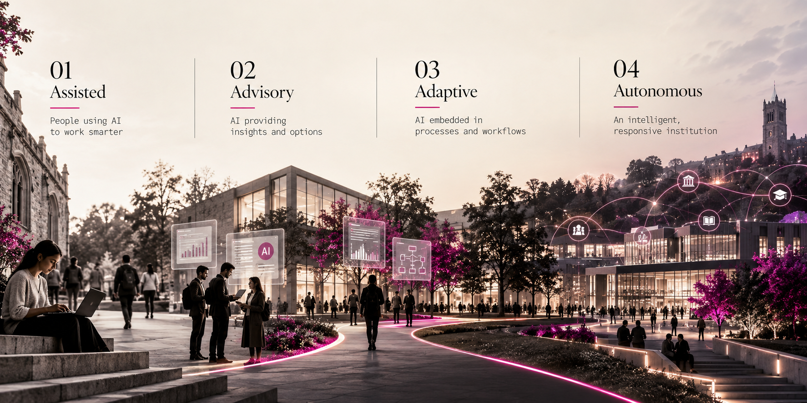

From Assisted to Autonomous
Building a practical AI maturity roadmap for universities.
Writing & Perspectives
Perspectives shaped by experience across enterprise technology and higher education, exploring how institutions can become more connected, intelligent and ready for what comes next.

Building a practical AI maturity roadmap for universities.
Building a practical AI maturity roadmap for universities.
Clarity of ownership, respect for process and patience with people carry across sectors.
Clear roles, shared data and accountability keep transformation moving.
A connected university is defined by how seamlessly its systems work together.
Designing connected journeys for students, parents, faculty, administrators and partners.
What makes transformation work across industries, applied with academic purpose.
AI’s value depends on the ability to sustain, integrate and scale what works.
People, clarity, trust and steady progress remain at the heart of transformation.
Having tough conversations early creates clarity, builds trust and makes change possible.